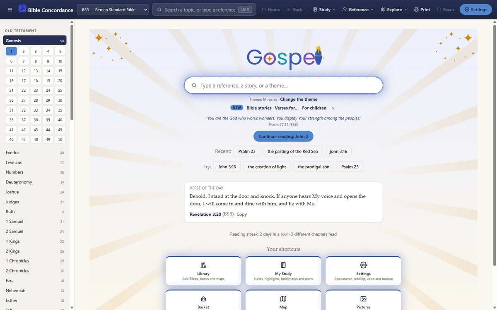
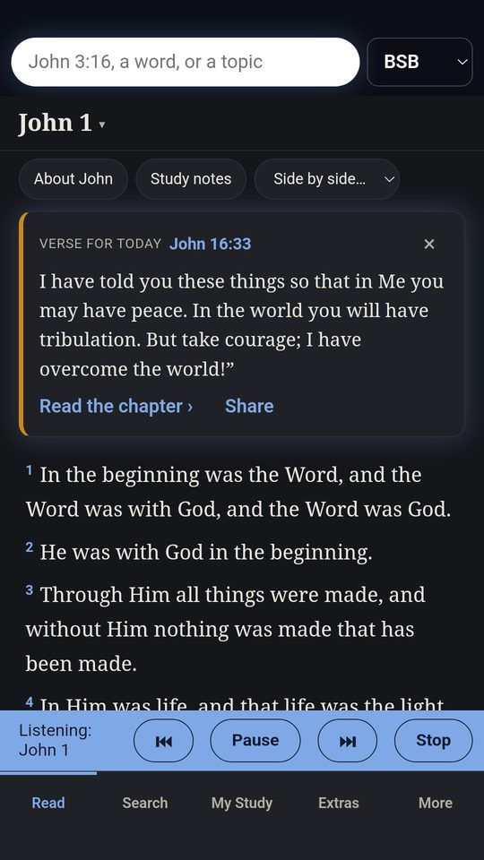
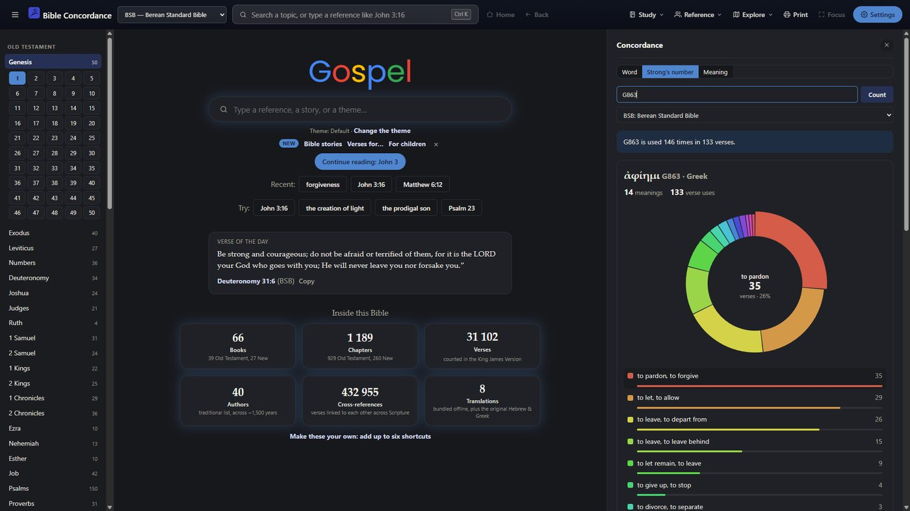
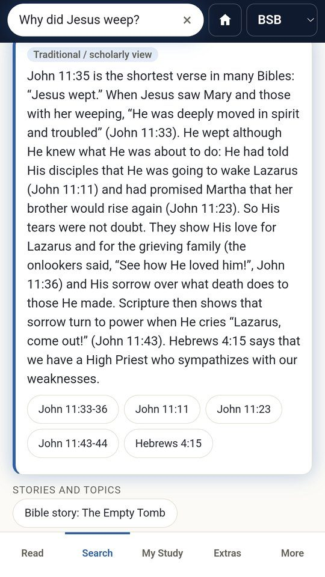
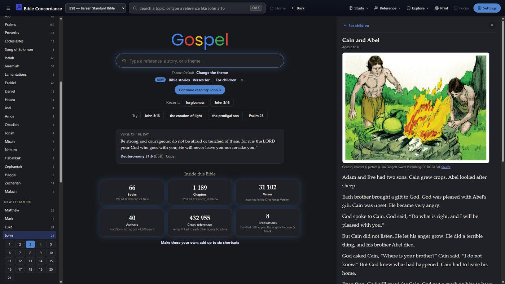
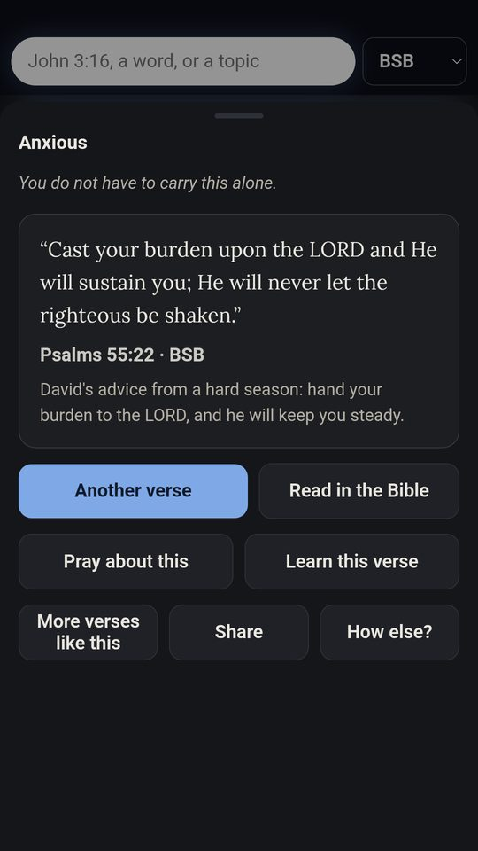
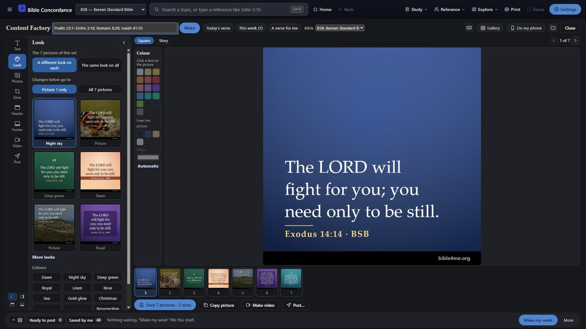
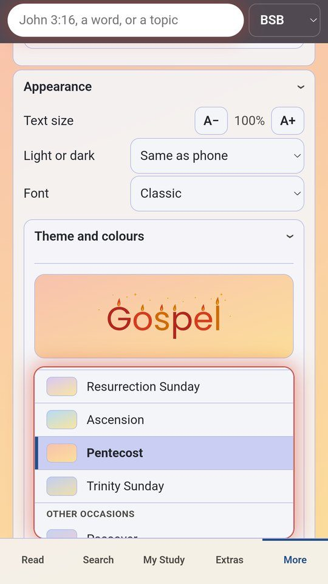

Home › Features
Features
Everything the app does, grouped by what you want to do. Each line says which device it is on.
Read and search
Find anything fast, in the Bible you like best, even with no signal.
- One search boxWindowsPhoneType a reference such as John 3:16 to go straight there, or a word, a phrase, a question or a subject.
- Five Bibles built inWindowsPhoneBSB, KJV, ASV, WEB and YLT, with the words of Jesus in red. Swipe or click to turn the chapter.
- More than 1,200 more BiblesWindowsPhoneDownload free Bibles from eBible.org and CrossWire's libraries, in hundreds of languages. On the phone, the search also looks inside a Bible you add.
- Two Bibles side by sideWindowsPhoneShow a second translation under each verse as you read.
- Read aloudWindowsPhoneWindows reads with a natural voice. On the phone, Listen keeps reading chapter after chapter with the screen off.
- Pick up where you left offWindowsOpen the app and carry on from the last chapter you read.


Ask and understand
Answers that begin with what the Bible says, and the words behind them.
- Ask a questionWindowsPhoneType a question in your own words. The answer quotes the Bible first, and shows where Christians differ. More than 400 questions are answered.
- Word studyWindowsPhoneTap a word for the Hebrew or Greek behind it (Strong's), its meaning, how often it is used, and every verse that uses it.
- Concordance and meaningsWindowsCount a word in every book, or search by meaning: love, affection, compassion. See each meaning in everyday English.
- Greek interlinearWindowsRead a chapter beside the Greek, each word with its Strong's number, meaning and grammar.
- CommentariesWindowsPhoneSeven free commentaries on Windows, beside the chapter. On the phone, tap any verse for a commentary.
- Cross-reference webWindowsFollow a verse to the verses it connects to, and branch out further.


Stories and children
Bible stories told simply, with the passage to read in your own Bible.
- Over 60 Bible storiesWindowsPhoneA short retelling, the passages to read, and a painting with its credit. In Old and New Testament lists, in Bible order, with a tick on the ones you have read.
- Verses for...WindowsPhoneTwenty-two pages for the moments that matter: fear, hope, joy, anxiety and more.
- Pages for childrenWindowsPhoneA simple retelling, a memory verse, three questions and something to try. Switch the picture to an outline to print and colour in.
- Bible mapsWindowsPhoneNine maps to zoom and drag, each with the passages it goes with. Windows also has an interactive map of the biblical world.
- More stories without an updateWindowsPhoneTap Fetch additional stories when new ones are added.


Daily life
Small, kind habits that bring you back to the Word.
- Daily ScrollPhoneTwenty cards a day, each one idea on a photo: a verse, a Bible story, who wrote a book, a Bible fact. Share, save, or open in the picture studio.
- How are you today?PhoneTap what is closest (anxious, tired, thankful...) and read a verse for it, with the story behind it one tap away.
- Prayer listPhoneKeep what you are praying about, and how God answered.
- Memory versesPhoneLearn Scripture by heart, with verses that come back after a day, three days, a week and on.
- A different notification each dayPhoneThe verse for the day, your Daily Scroll, a memory verse or a prayer. Plus a verse widget for your home screen.

Pictures and sharing
Put the Word on a picture and share it.
- Verse picturesPhoneA verse or your own words on a photo, portrait or square, with five fonts, your own photo or ours, and your logo wherever you drag it.
- Content FactoryWindowsMake whole sets of verse pictures in different looks, and short videos to post.
- Share a story or a verseWindowsPhoneSend it straight to a friend or your church group.


Preach and present
From the first idea on Monday to the slides on Sunday.
- Sermon builderWindowsGather Scripture, commentary and background on the left, and watch the sermon take shape on the right.
- SlidesWindowsPresent with a presenter view, or save as PowerPoint or ProPresenter, with the CCLI line when you need it.
- Sunday serviceWindowsNotices, music and sermon made apart, with buttons to print the bulletin and present.
- Follow alongWindowsPeople on your church Wi-Fi read the words on their own phones. Off until you switch it on, and it never leaves your network.

Your study and sync
Your notes are yours. They stay on your devices.
- Bookmarks, highlights and notesWindowsPhoneHighlight in eleven colours you can name yourself, write notes, tag them, and find them again in My Study.
- Phone and computer in stepWindowsPhoneAt home on your Wi-Fi the two apps keep your bookmarks, highlights and notes the same. Nothing goes through any cloud or account of ours.
- BackupsWindowsPhoneSave a backup file whenever you like, and send it to yourself by email or WhatsApp.
- PrivateWindowsPhoneNo account, no adverts, no tracking. Nothing about you is collected.
Library and extras
A whole shelf of free books, and a look for every season.
- A free libraryWindowsPhoneDownload free commentaries, dictionaries, books and devotionals (Barnes, Matthew Henry, Easton's, Spurgeon and many more), or add your own from a file.
- ThemesWindowsPhoneA look for every season of the church year, from Advent to Pentecost, plus Passover, Communion and Harvest. Choose your own colours and fonts.
- The writers of the BibleWindowsPhoneWho wrote each book, and when.
- Genealogies and FirstsWindowsFamily trees, and the first time each thing happens in the Bible.
- Study notesPhoneTyndale Open Study Notes on each verse and chapter, and an introduction to every book.

